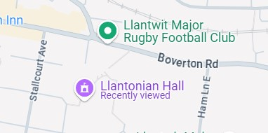

LLANTONIAN BRIDGE CLUB
Introduction
Committee
Chairman: Allan Evans
Treasurer: Andrew Leonard
Secretary: Meryl Phillips
Nuisance: Andy Dick

The Llantonian Hall is situated at the far end of the Car Park it shares with the Rugby Club. Access is directly off the roundabout passed the surgery.
Fees
Meetings